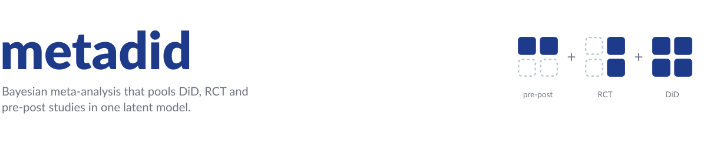
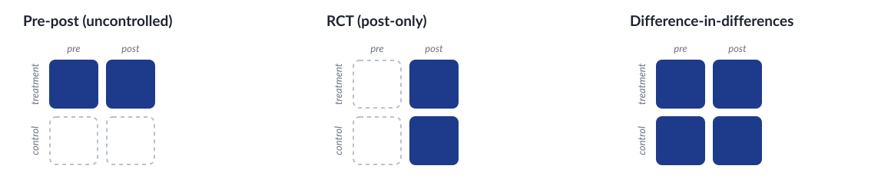
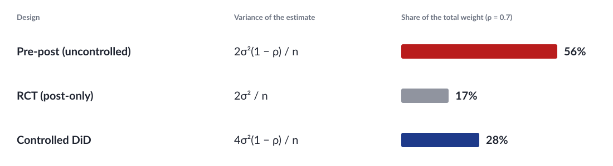
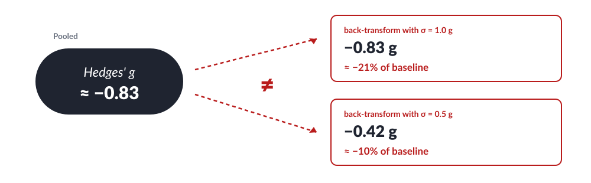
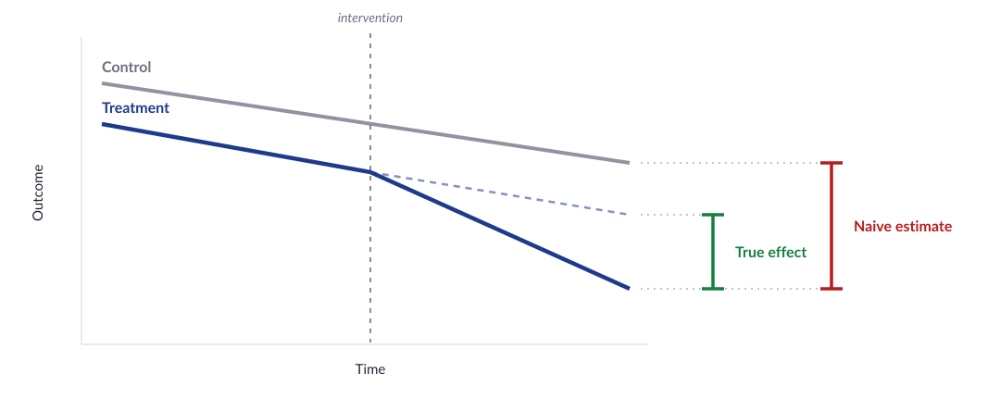
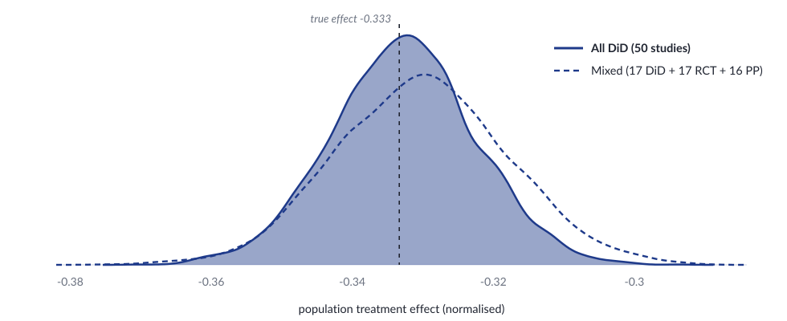
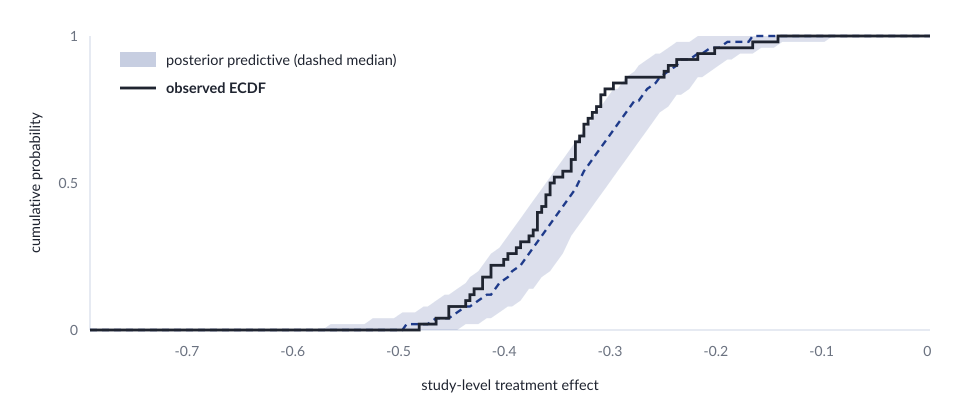
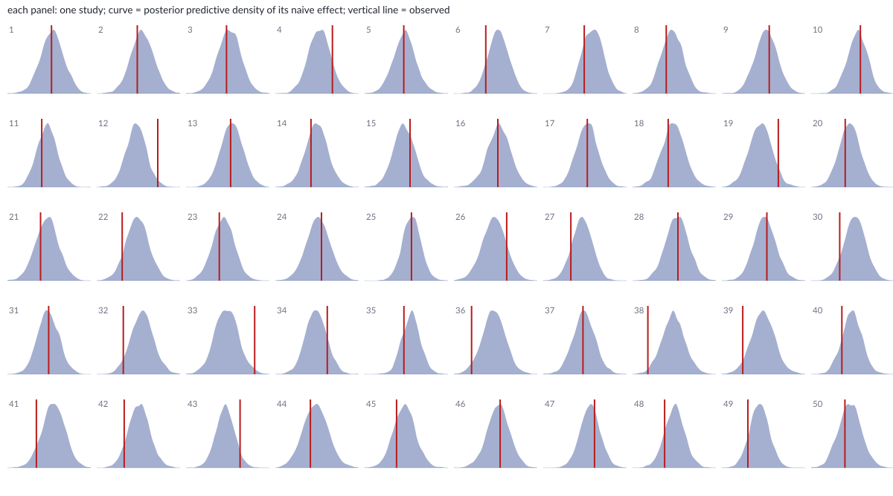
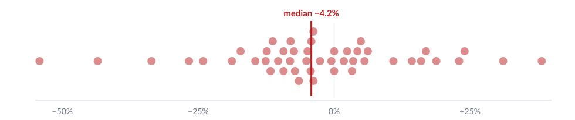
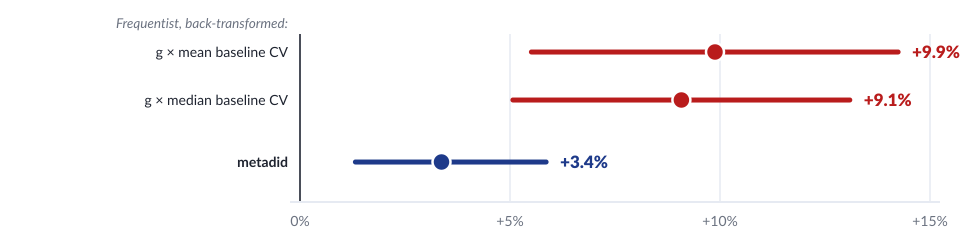

metadid is an R package for Bayesian meta-analysis. It allows different study designs to be pooled based on a simple concept: if you have a few difference-in-differences (DiD) designs (also called controlled before-and-after designs) you can use these to re-estimate all studies as if they were DiDs, achieving accurate study pooling and increasing statistical power.
metadid uses a hierarchical Stan model that accounts for design-specific information and heterogeneity across studies, with optional baseline normalisation to place outcomes on a common fractional scale.
Did something cause something else?
There are three main study designs that try to answer this, and most literature contains a mixture of them.

Each design observes a subset of the same 2 × 2 experiment: groups (treatment, control) crossed with time (pre, post). Only DiD observes all four cells and identifies the treatment effect on its own. Pooling the designs as if they estimated the same quantity is where standard meta-analysis goes wrong. (metadid also accepts change-score DiDs, where only each arm’s pre-to-post change is reported.)
Three problems with standard meta-analysis
1. The most informative design can get a low weight
Most meta-analysis methods use inverse variance weighting. However, this approach can give the most informative designs (a DiD) a low weight. This is because a DiD estimate is the difference of two paired changes, and includes two sources of variance. Put differently, the designs that don’t control for potential time trends can receive twice the weight of the designs that seek to remove it.

What metadid does: it uses the DiD studies to fill in what the other designs did not measure. Each study enters the likelihood through the cells it observed, so no design is weighted by a variance formula that is blind to its bias.
2. Standardised mean differences have no natural scale
Hedges’ g (and similar metrics) help make studies with different outcome measures comparable, but in the process lose real-world meaning. The pooled g must be back-transformed to get back to an outcome of interest, but several reasonable SDs usually exist to back-transform with (a baseline SD, a control-arm SD, a population reference) and they can disagree by a factor of two.

What metadid does: it pools directly on percentage change from baseline or on absolute units, so no back-transformation is needed. If SMDs are what a literature reports, metadid can pool those as well.
3. Time trends are confounded with treatment
Outcomes drift over time for reasons unrelated to treatment. A pre-post study cannot separate that drift from the effect, and discarding the time component biases the pooled estimate.

What metadid does: it estimates the time trend from studies with control arms and imputes it for studies without one, so the trend is removed from single-arm effect estimates instead of being counted as treatment.
The benefit of a small number of DiDs
simulate_meta_did() generates individual-level pre/post data for both arms across a set of studies from a known hierarchical model. We simulate 50 studies from a shared latent DiD structure:
library(metadid)
library(dplyr)
library(ggplot2)
sim <- simulate_meta_did(
n_studies = 50,
n_control = 80,
n_treatment = 80,
true_effect = -0.15,
sigma_effect = 0.03,
true_trend = -0.02,
sigma_trend = 0.01,
baseline_mean = 0.45,
baseline_sd = 0.02,
rho = 0.5,
seed = 495
)The raw population treatment effect is -0.15. Because metadid normalises each study by its own baseline, the estimand is the mean of per-study normalised effects, \(E[\theta_i / b_i]\), rather than the ratio of population means, \(E[\theta] / E[b]\). These two quantities differ by the between-study baseline coefficient of variation squared, which is negligible here (baseline SD 0.02 on a mean of 0.45), so both are approximately -0.333. For this simulated dataset the realised \(E[\theta_i / b_i]\) is -0.333, which is what the model targets.
Two scenarios from the same data
In the best case, every study provides full four-cell summary statistics (pre/post × control/treatment). This gives the model maximum information per study:
all_did <- as_summary_did(sim)
fit_all_did <- meta_did(
summary_data = all_did,
seed = 495
)
print(fit_all_did)#> Bayesian meta-analysis (metadid)
#> Studies: DiD = 50 | RCT = 0 | Pre-Post = 0 | DiD (change only) = 0
#> Population treatment effect: -0.333 90% CI [-0.349, -0.316]Now suppose, from the same underlying data, only a third of studies provide full DiD information. Another third are post-only RCTs, and the remaining third are uncontrolled pre-post studies:
Split the simulated studies into the three designs
study_ids <- unique(sim$study_id)
true_params <- attr(sim, "true_params")
sim_did <- sim |> filter(study_id %in% study_ids[1:17])
sim_rct <- sim |> filter(study_id %in% study_ids[18:34])
sim_pp <- sim |> filter(study_id %in% study_ids[35:50])
attr(sim_did, "true_params") <- true_params |> filter(study_id %in% study_ids[1:17])
attr(sim_rct, "true_params") <- true_params |> filter(study_id %in% study_ids[18:34])
attr(sim_pp, "true_params") <- true_params |> filter(study_id %in% study_ids[35:50])
mixed <- bind_rows(
as_summary_did(sim_did),
as_summary_rct(sim_rct),
as_summary_pp(sim_pp)
)
fit_mixed <- meta_did(
summary_data = mixed,
seed = 495
)
print(fit_mixed)#> Bayesian meta-analysis (metadid)
#> Studies: DiD = 17 | RCT = 17 | Pre-Post = 16 | DiD (change only) = 0
#> Population treatment effect: -0.330 90% CI [-0.350, -0.310]The mixed evidence base recovers the same answer with an interval about 20% wider: the 17 DiD studies identify the trend and baseline structure that the other 33 studies need.
Comparing posteriors
Both fits recover the true normalised effect \(E[\theta_i / b_i] \approx -0.333\) (dashed line). The mixed-design posterior is slightly wider, reflecting the information lost by having two-thirds of the studies provide incomplete data, but the difference is modest.
Plotting code
draws_did <- as.numeric(
fit_all_did$fit$draws("treatment_effect_mean", format = "draws_matrix")
)
draws_mix <- as.numeric(
fit_mixed$fit$draws("treatment_effect_mean", format = "draws_matrix")
)
comp_df <- data.frame(
value = c(draws_did, draws_mix),
scenario = rep(c("All DiD (50 studies)", "Mixed designs (17 DiD + 17 RCT + 16 PP)"),
each = length(draws_did))
)
ggplot(comp_df, aes(x = value, fill = scenario)) +
geom_density(alpha = 0.4) +
geom_vline(xintercept = -0.15 / 0.45, linetype = "dashed", linewidth = 0.8) +
annotate("text", x = -0.15 / 0.45 + 0.003, y = Inf, label = "True effect",
hjust = 0, vjust = 1.5, size = 3.5) +
labs(x = "Population treatment effect (normalised)", y = "Density", fill = NULL) +
theme_minimal() +
theme(legend.position = "bottom")
The key takeaway: by assuming a common latent DiD structure, the model borrows strength across designs. RCT and pre-post studies contribute meaningful information about the treatment effect, even though they each observe less of the underlying process than a full DiD study.
Posterior predictive checks
pp_check_cdf(type = "summary") compares the empirical CDF of observed study-level treatment effects (step function) to the posterior predictive CDF (ribbon and dashed median). If the model is well-calibrated, the observed ECDF should track the predictive band.
pp_check_cdf(fit_mixed, type = "summary")
For a more granular per-study view, pp_check_effects() shows each study’s observed naive effect against its posterior predictive density:
pp_check_effects(fit_mixed)
Extending the model
Priors on every parameter keep inference stable when studies are few, and a Student-t heterogeneity model guards against outlying studies:
fit_robust <- meta_did(
summary_data = mixed,
robust_heterogeneity = TRUE,
priors = set_priors(treatment_effect_mean = normal(0, 1)),
seed = 495
)Study-level covariates turn the model into a meta-regression:
fit_dose <- meta_did(
summary_data = mixed,
covariates = ~ dose,
seed = 495
)An example
Competition and testosterone. Does winning a competition raise testosterone and feed a winning streak? Geniole et al. (2017) meta-analysed the winner effect on the standardised mean difference scale; we first replicate their analysis using their method and data and get effectively the same Hedges’ g = 0.22 (95% CI 0.12 to 0.32). We then re-analyse the result using metadid.
There is a time-trend in the data
Testosterone gradually decreases during the day anyway. The graph shows 47 control arm change observations (each dot is one study).

The pooled effect changes under metadid
The graph below compares the result under the original frequentist method, back-transformed in two alternative and plausible ways, and the result from metadid. The bars represent 95% confidence/credible intervals. The result changes, in this case, mainly because metadid separates the time trend from the treatment effect. While Geniole et al. only report on the SMD scale, we also note that pooling directly on percentage changes allows for a more intuitive effect size without the need for any back-transforms, which can lead to further differences in results.

Model assumptions
metadid assumes that all studies arise from a common latent difference-in-differences structure. Different study designs correspond to observing different parts of this latent structure.
DiD studies are the only design in this framework that directly identify the treatment effect. Meta-analyses that do not include DiD studies are not identified from the data and depend entirely on modelling assumptions. We do not recommend using this approach in the absence of DiD evidence.
Latent DiD model
For study \(i\), outcomes in the control group satisfy
\[ \begin{pmatrix} Y_{i,c,\mathrm{pre}} \\ Y_{i,c,\mathrm{post}} \end{pmatrix} \sim \mathcal{N} \left[ \begin{pmatrix} \alpha_i \\ \alpha_i + \beta_i \end{pmatrix} , \begin{pmatrix} \sigma^2_{i,c,\mathrm{pre}} & \rho_{i,c}\sigma_{i,c,\mathrm{pre}}\sigma_{i,c,\mathrm{post}} \\ \rho_{i,c}\sigma_{i,c,\mathrm{pre}}\sigma_{i,c,\mathrm{post}} & \sigma^2_{i,c,\mathrm{post}} \end{pmatrix} \right], \]
and outcomes in the treatment group satisfy
\[ \begin{pmatrix} Y_{i,t,\mathrm{pre}} \\ Y_{i,t,\mathrm{post}} \end{pmatrix} \sim \mathcal{N} \left[ \begin{pmatrix} \alpha_i + \gamma_i \\ \alpha_i + \gamma_i + \beta_i + \theta_i \end{pmatrix} , \begin{pmatrix} \sigma^2_{i,t,\mathrm{pre}} & \rho_{i,t}\sigma_{i,t,\mathrm{pre}}\sigma_{i,t,\mathrm{post}} \\ \rho_{i,t}\sigma_{i,t,\mathrm{pre}}\sigma_{i,t,\mathrm{post}} & \sigma^2_{i,t,\mathrm{post}} \end{pmatrix} \right]. \]
Here:
- \(\alpha_i\): baseline mean in the control group
- \(\beta_i\): time trend shared across groups
- \(\gamma_i\): baseline difference between treatment and control
- \(\theta_i\): study-specific treatment effect
- \(\rho_{i,c}\), \(\rho_{i,t}\): pre/post correlations
- \(\sigma_{i,g,\mathrm{pre}}\), \(\sigma_{i,g,\mathrm{post}}\): marginal standard deviations
The key identifying assumption is that, in the absence of treatment, the treatment group would have followed the same time trend \(\beta_i\) as the control group.
Hierarchical treatment effects
Study-specific treatment effects are modelled hierarchically,
\[ \theta_i \sim \mathcal{N}(\mu_\theta, \tau_\theta^2), \]
where \(\mu_\theta\) is the overall treatment effect and \(\tau_\theta\) captures between-study heterogeneity. For robustness to outlying study effects, the model can alternatively use a Student-t distribution, \(\theta_i \sim t_\nu(\mu_\theta, \tau_\theta)\), where \(\nu\) controls the tail-heaviness.
Individual-level and summary-level data
The model supports both individual-level data and summary statistics (means, variances, sample sizes) by deriving likelihoods from the same latent bivariate-normal structure.
Practical implication
Designs with missing components (e.g. pre-post) become informative by borrowing structure from other studies, but this increases reliance on the modelling assumptions above. Post-only RCTs identify the sum of the treatment effect and any baseline imbalance, while pre-post studies identify the sum of the treatment effect and time trends. In the absence of DiD studies, separating these components relies on modelling assumptions. While RCTs may be less sensitive under randomisation assumptions, both designs provide only partial identification of the treatment effect in this framework.
We are looking for datasets. If you have a meta-analytic dataset that mixes study designs, or one where the SMD scale, the weights or the time trends never sat right, we would like to test the method on it. Open an issue.
Installation
metadid depends on cmdstanr and instantiate, which compile Stan models at package install time. Install them first if you haven’t already:
install.packages("cmdstanr", repos = c("https://mc-stan.org/r-packages/", getOption("repos")))
cmdstanr::install_cmdstan()
install.packages("instantiate")Then install metadid from GitHub:
# install.packages("pak")
pak::pak("ben18785/metadid")Learn more
- Synthesising treatment effects across DiD, RCT and pre-post designs: the full worked example
- Meta-regression with study-level covariates: additive and multiplicative moderators
- Model details and identification: the latent likelihoods, priors and identification
- Function reference on the package site